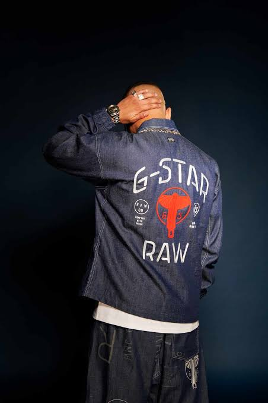
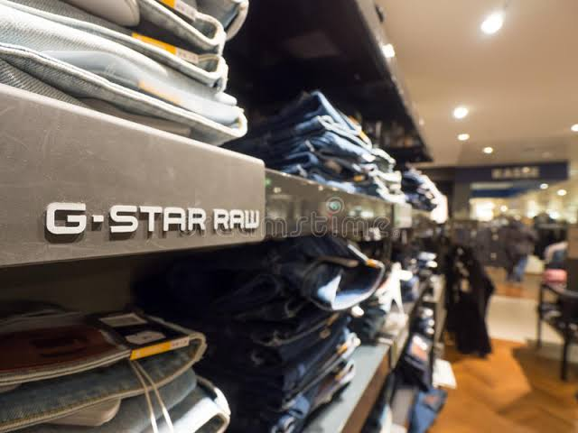
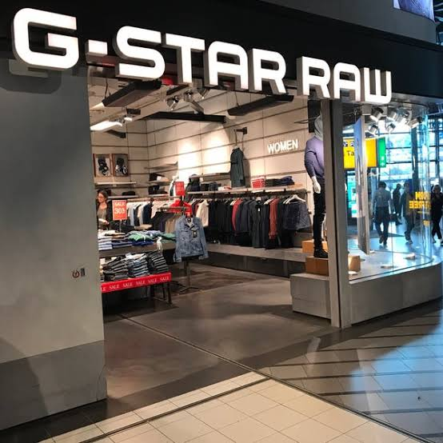
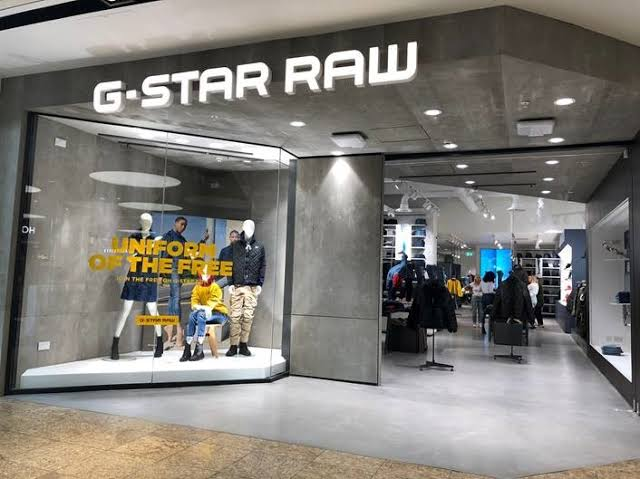

G-STAR RAW
G-STAR Raw is a Dutch designer clothing company, founded by Jos van Tilburg in Amsterdam in 1989. The brand specializes in making raw denim-an unwashed, untreated denim. G-Star is influenced by military clothing. Inspirations of their designs come from vintage military apparel from around the world.
   